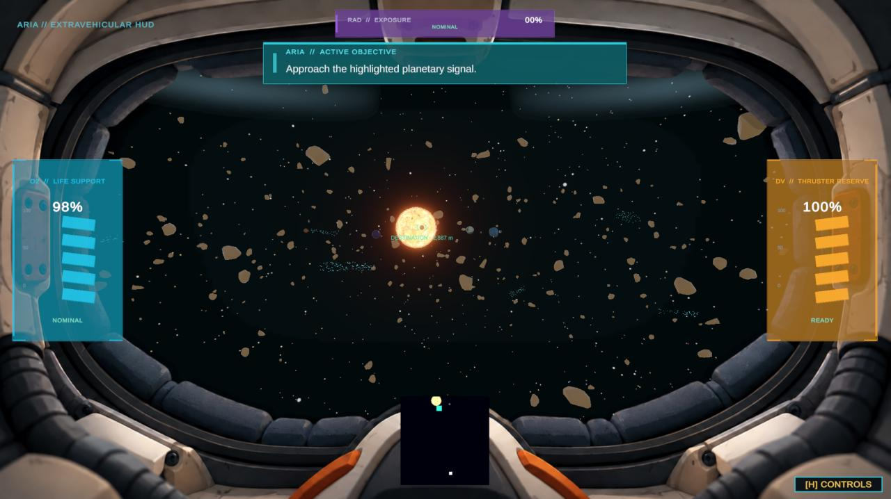
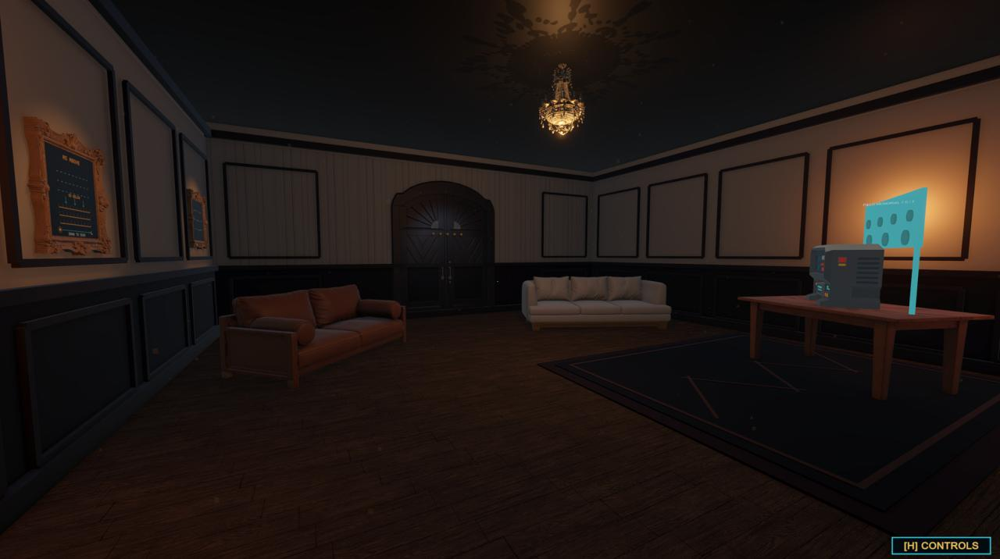

Featured project · Work in progress
Beyond the Mask — Adaptive Space Exploration Game
A solo academic game-development project built with Unity and C#. The project combines first-person planetary exploration, interactive puzzles, survival resources, and a player-performance-driven dynamic difficulty system in a science-fiction setting.
Focus
- First-person movement, zero-gravity flight, and planet-specific gravity
- Interactive puzzles, objectives, hints, and scene progression
- Oxygen, fuel, radiation, and environmental effects
- Player telemetry, modelling, and dynamic difficulty adjustment
My role
Solo developer: game design, C# gameplay programming, Unity implementation, Blender 3D asset creation, audio recording/editing with Audacity, integration, and testing.
Development is ongoing; the project is presented as an in-progress academic game.

